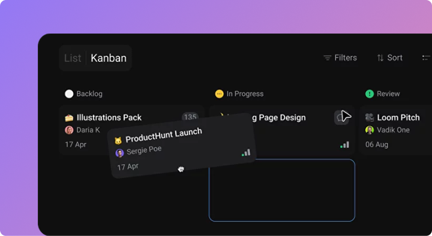

Effective Task Management: Prioritization And Planning Methods For Remote Teams
Discover how to structure tasks, set clear priorities, and get the most out of your workflow with an actionable guide.

At its core, task management is about ensuring that every person on your team is working on the right tasks, at the right time, with the right resources. Whether you're leading a remote team, running a startup, or juggling multiple projects, effective task management is what keeps the wheels turning.
If you're familiar with missed deadlines, unnecessary stress, and decreased productivity, your task management is off track. So, how can your team move from chaos to structure?
This comprehensive guide is gonna show how it all starts with prioritization and planning methods. Keep reading to get hacks on effective task management, from understanding the science behind task prioritization to using cutting-edge tools.
Why task prioritization matters
Task prioritization is the foundation of effective task management. Without it, teams often find themselves bogged down by trivial tasks or constantly shifting focus. Prioritizing tasks ensures that the most important ones are tackled first, helping to make steady progress toward goals.
Here are more reasons why prioritization is crucial:
- Strengthen strategy. Prioritization ensures you stay focused on your overall strategy and identify tasks that have the greatest impact on the team's objectives.
- Maximise ROI. When projects are closely aligned with strategic objectives, they tend to deliver greater value and result in a higher return on investment.
- Reduces procrastination. When you know what needs to be done and why, it's easier to stay focused and avoid distractions.
Top task prioritization methods you should know
There are several well-established prioritization techniques you can consider to manage a team's workload more effectively. Here are some of the best ones you can start using right away.
The Eisenhower matrix, or Urgent-Important matrix
The Eisenhower matrix, named after former U.S. President Dwight D. Eisenhower, is one of the most popular prioritization frameworks. It helps individuals prioritize tasks based on their urgency and importance with the following categories:
- Urgent and Important. Do these tasks immediately.
- Important but Not Urgent. Schedule these tasks for later.
- Urgent but Not Important. Delegate these tasks to someone else.
- Not Urgent and Not Important. Eliminate these tasks from your to-do list.
This matrix is perfect for teams that need to focus on both short-term and long-term goals while managing multiple responsibilities.
ABCDE method
The ABCDE is derived from Brian Tracy's book Eat That Frog. It's a simple but powerful way to prioritize tasks based on their importance and identify what needs immediate attention:
- A Tasks. Must-do tasks with serious consequences if not completed.
- B Tasks. Should-do tasks that have minor consequences if not completed.
- C Tasks. Nice-to-do tasks with no real consequences.
- D Tasks. Tasks you can delegate to someone else.
- E Tasks. Tasks you can eliminate.
The Ivy Lee method
The Ivy Lee method is about simplifying task prioritization by limiting the number of tasks you focus on each day. At the end of each workday, team members write down the six most important tasks they need to accomplish the next day, in order of priority. The next day, they focus solely on the first task until it's completed, then move on to the next. This method prevents multitasking and keeps your focus on high-priority tasks.
MoSCoW prioritization
MoSCoW is a prioritization framework similar to the ABCDE method. It is commonly used in project planning to break tasks into four categories:
- Must-have. Tasks that are critical for success.
- Should-have. Important tasks that are not essential but add significant value.
- Could-have. Nice-to-have tasks that have less impact.
- Won’t-have. Tasks that are non-essential and can be eliminated.
Time-blocking techniques
Last but not least, time-blocking is a scheduling method that divides your day into dedicated time slots for specific tasks. This reduces context-switching, improves focus, and ensures that important tasks get the attention they deserve. Also, it is easy to combine a time-blocking technique with other prioritization methods to ensure that high-priority tasks are scheduled first.
Smart approaches to task management
Once you've prioritized your tasks, the next step is planning. Effective task planning helps teams organize their work, set timelines, and keep track of progress. Here are some of the top planning methods used by modern teams:
Agile and Scrum frameworks
Agile and Scrum are two of the most popular project management frameworks used today, especially in software development. Agile emphasizes flexibility and iterative progress, while Scrum breaks projects into short 'sprints' with specific goals. These frameworks prioritize regular communication, quick feedback loops, and the ability to pivot when necessary.
Gantt charts and timelines
Gantt charts are visual planning tools that allow teams to map out tasks, deadlines, and dependencies over time. They are especially useful for projects with multiple phases or complex timelines, as they help teams see the big picture and identify potential bottlenecks.
The Kanban method
Kanban is a visual task management method that uses boards (either physical or digital) to represent the status of tasks. Tasks move from 'to-do' to 'in progress' to 'completed' as they are worked on. This system helps teams visualize their workflow and limit the number of tasks being worked on simultaneously, which prevents bottlenecks and inefficiencies.

Weekly and daily planning
Weekly and daily planning helps teams stay on top of their workload by breaking down larger goals into smaller, more manageable tasks. Teams can set weekly objectives and then break them down into daily tasks to stay focused and ensure steady progress.
Task batching and themed days
Task batching involves grouping similar tasks and working on them in focused blocks of time. This minimizes context-switching and increases productivity. Themed days take task batching a step further by dedicating entire days to specific types of work. As an example, a team could have 'Meeting Mondays' and 'Deep work Wednesdays'.
Tips to prevent task management mistakes
Even with the best strategies in place, teams can still fall into common task management traps. Here are some of the most frequent mistakes and how to overcome them:
Overloading the to-do list
Don't take on too many tasks at once. It almost always leads to burnout and missed deadlines. Instead, prioritize tasks and use time-blocking to focus on the most important work.
Ignoring task dependencies
Some tasks can't be completed until others are finished, and failing to recognize this can lead to project delays. Transparent task boards can help teams visualize dependencies and keep projects on track.
Lack of clarity
Tasks that are vague or poorly defined lead to confusion and wasted time. Ensure that every task has a clear owner, deadline, and set of instructions. And keep it in one place.
Multitasking
Multitasking may seem efficient, but it often reduces focus and quality. Encourage team members to try the Ivy Lee method or time-blocking to focus on one task at a time.
Meet Orchestra: a tool that complements task management practices
Orchestra is a powerful all-in-one workspace crafted to streamline communication and task management. It's an ideal tool for any workspaces, especially the remote ones:
Key features:
- Powerful team messenger. Make communication work for you again — keep all chats and channels neatly organized in a single workspace. Address all urgent matters in a topic-based space or built-in video calls, no more chaos.
- Seamless task management. All your projects are right where your team is. You can create tasks directly from the discussion or modify task details while you're on a call. No need to switch between platforms to remember what task your team is working on. It is all here.
- Various API integrations. Smooth collaboration comes from having everything in one place. Our API solution makes it easy to invite external contributors to any workspace and seamlessly integrate essential data from various platforms.
Task management strategies for remote teams
Remote teams face unique challenges when it comes to task management, including time zone differences, communication barriers, and a lack of face-to-face interaction. However, with the right strategies in place, remote teams can be just as productive as in-office teams — if not more so.
Best practices for remote task management:
- Clear communication. Use tools like Orchestra to ensure that work discussions remain clear, organized, and easily accessible.
- Asynchronous workflows. Encourage asynchronous workflows to accommodate different time zones and work styles.
- Regular check-ins. Hold regular team check-ins to stay aligned on progress, goals, and priorities.
- Document everything. Keep detailed documentation of tasks, projects, and decisions to ensure that everyone is on the same page.
Effective task management is the key to unlocking your team's full potential. By using proven prioritization techniques, task planning methods, and powerful tools like Orchestra, you can create a structured, efficient workflow that drives success.
Task management doesn't have to be overwhelming. By breaking down projects into manageable steps, prioritizing what matters, and leveraging the right tools, your team can stay on top of their work and achieve more than ever before.
FAQ
What is the best way to prioritize tasks?
The best way to prioritize tasks is by using methods like the Eisenhower Matrix or the ABCDE method. These techniques help you focus on what’s most important and avoid wasting time on low-priority tasks.
How can I improve my team’s task management skills?
You can improve task management skills by implementing structured prioritization methods, using collaborative tools, and regularly reviewing progress.
What tools should I use for task management?
Some of the best tools for task management include Orchestra, Asana, and Favro. These platforms offer features for task prioritization, project tracking, and team collaboration.
How do I prevent task overload?
Prevent task overload by limiting the number of tasks you focus on each day. Use methods like the Ivy Lee Method or time-blocking to focus on one task at a time.
How can I keep remote teams productive?
Keep remote teams productive by using clear communication channels, implementing seamless workflows, and regularly checking in on progress.